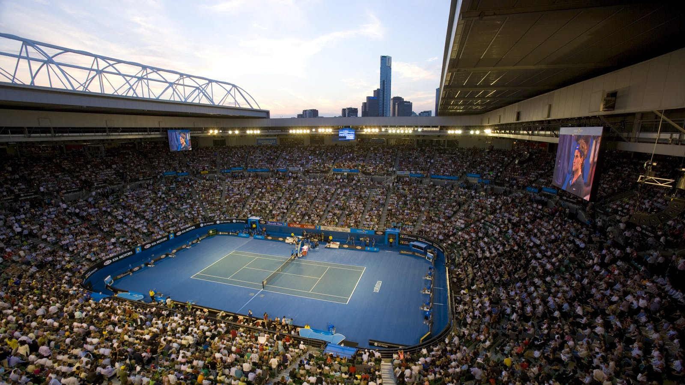
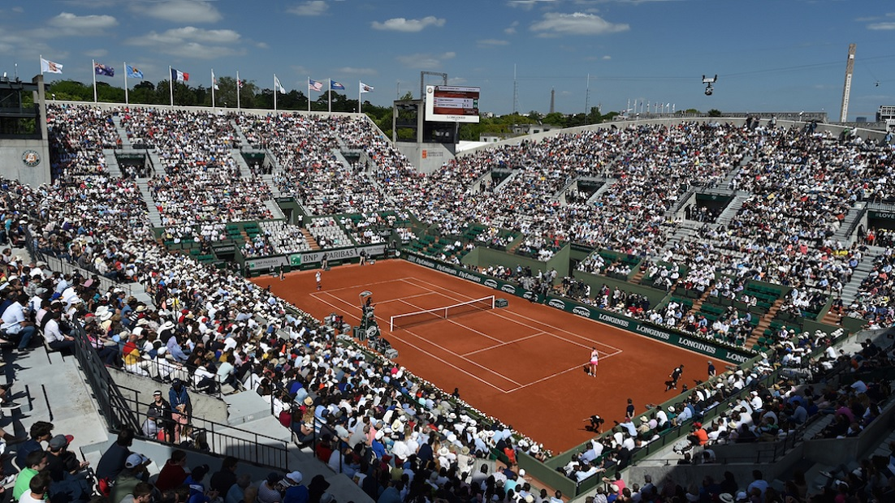
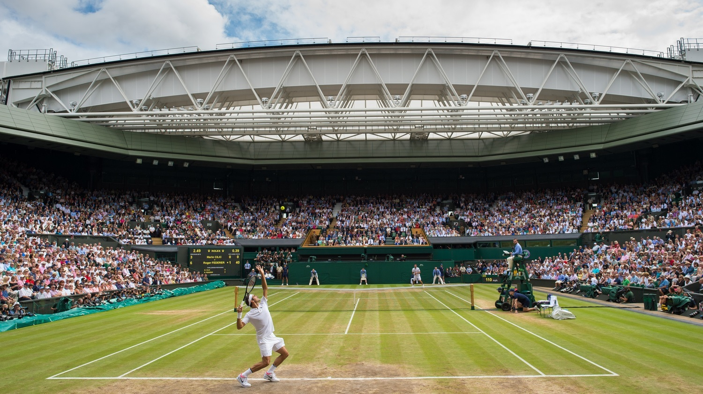
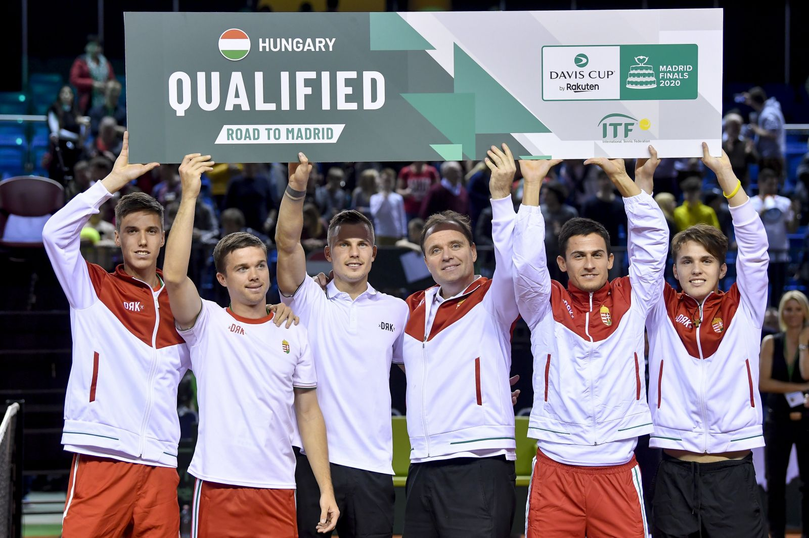
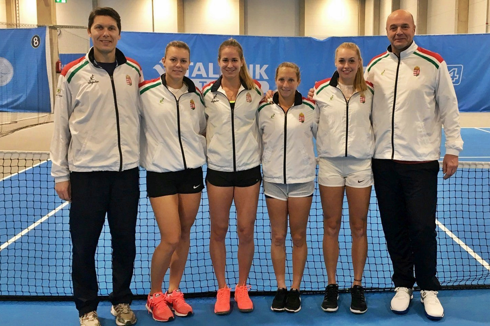
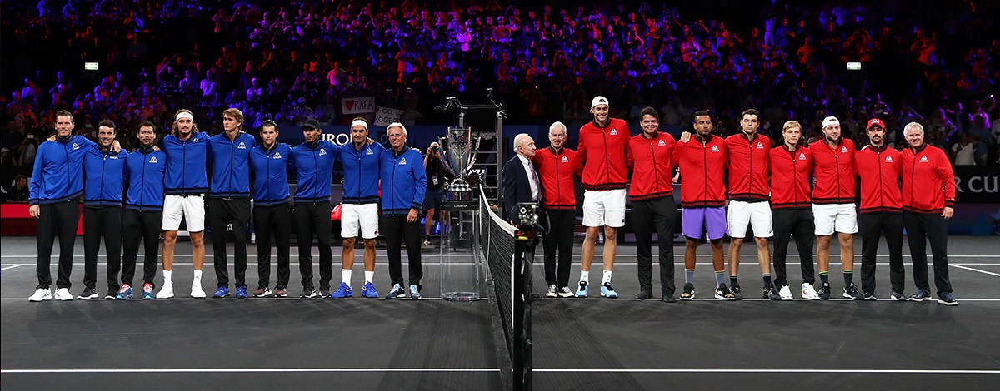
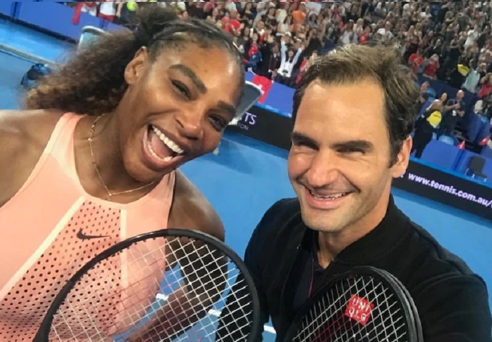
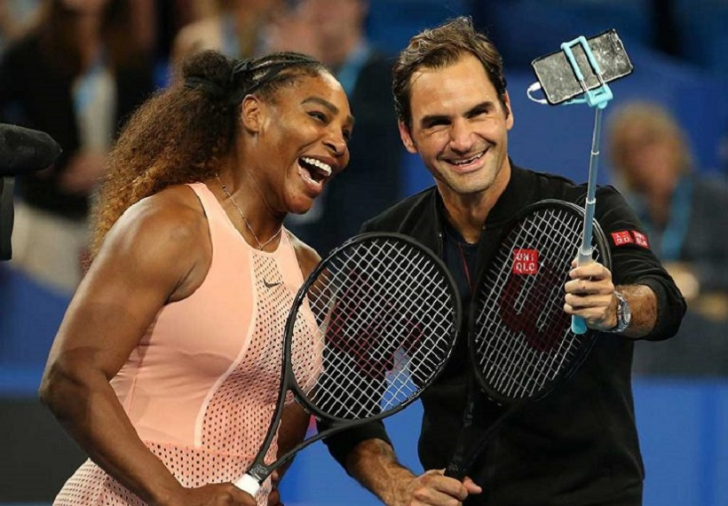

Az ITF az ATP és a WTA minden évben különböző tornákat szervez világszerte. Ezek mind a férfiaknál, mind
a nőknél szintek szerint elkülöníthetőek és különböző mértékű ranglistapontot érnek:
Női és férfi versenyekÖsszefoglaló
A táblázat a női és férfi teniszversenyeken szerezhető ranglistapontokat tartalmazza.
férfi versenyek
ranglistapont
női versenyek
Grand Slam tornák
2000
Grand Slam tornák
ATP World Tour Finals
1500
WTA Finals
ATP Masters tornák
1000
Premier Mandatory tornák
ATP 500-as tornák
500 / 700
WTA Elite Trophy
ATP 500-as tornák
250 / 470
Premier tornák
Challenger tornák
125 / 280
International tornák
Futures tornák
50
Futures tornák
Grand Slam tornák
A Grand Slam-tornák a legrangosabb teniszesemények. Minden évben négy ilyen
versenyt rendeznek. A
versenyszezon januárban Melbourneben, az Australian Opennel kezdődik
kemény pályán, nyáron a párizsi
salakpályás Roland Garroson, majd ezt követően a londoni
Wimbledon füves pályáin folytatódik, végül
ősszel Amerikában zárul a US Open elnevezésű szintén kemény pályás
megmérettetéssel.
Ezeken a versenyeken a férfiak és a nők is indulhatnak egyéniben és párosban, illetve lehetőség
van még
vegyes
párosra is. Egyéniben a jelentkezők közül a ranglista szerinti első 112 játékos automatikusan
felkerül a
főtáblára, azaz
indulhat a versenyen, míg az alacsonyabban rangsorolt versenyzőknek először egy
kvalifikációs
versenyen kell részt venniük, amelynek 16 győztese szintén megkapja az indulás
jogát. A
párosok versenyében pedig kvalifikáció hiányában az első 64 páros vehet részt. A torna ez után
egyenes
kieséses formában 5-7 körben két héten keresztül zajlik.



A négy Grand Slam torna center pályája:
Rod Laver Arena - Australian Open,
Court Philippe-Chatrier - Roland Garros,
Centre Court - Wimbledon,
Arthur Ashe Stadium - US Open
A korábban felsoroltakon kívül még akadnak/akadtak kevésbé fontos, ám annál érdekesebb események a
tenisz versenynaptárában. Ezek azért is lehetnek izgalmasak, mivel itt teljesen más erőviszonyok
alakulhatnak ki, illetve a profi versenyzők sem feltétlenül veszik őket annyira komolyan, néhányat
inkább bemutató meccsként fognak fel.
Davis Kupa/Billie Jean King Kupa
A férfiak esetében Davis-, míg a nőknél Billie Jean KingKupa
(korábban Fed) talán az egyik leghosszabb
ideig tartó és a nézőkhöz legközelebb álló versenysorozat az évben. A korábban említett versenyektől
eltérően itt egy-egy ország nemzeti válogatottja (4-5 fő) alkot egy csapatot, akiket országok,
kontinensek szerint csoportokba osztanak. Erre azért van szükség, mivel a csoportmeccseket az aktuális
párosítás egyik résztvevőjének hazájában szervezik meg, figyelve arra, hogy nagyjából egyensúlyban
legyen a hazai pályán és idegenben játszott mérkőzések száma az egyes csapatok tekintetében. Így
általában egy éven belül a hazai játékosoknak, felváltva: egyszer itthon a lelátón (élőben), majd pedig
TV-n keresztül (esetleg külföldön helyben) nézve szurkolhatunk. A világ legjobb 12 csapata (földrajzi
elhelyezkedéstől függetlenül) az ún. világcsoportban a kupa megnyeréséért vív harcot, míg a többiek évi
célja a világcsoportba való feljutás csoportmeccseik megnyerésével. Ez úgy lehetséges, hogy a
világcsoport tagjai közül, akik az egyenes kieséses szakaszban veszítenek, kiesnek a világcsoportból és
visszakerülnek saját régiójuk csoportjába, következő évben pedig ott harcolva újból esélyük lehet
visszakerülni. A kupaversenyek egy-egy összecsapása egy 3 napig tartó viadal, amely során 2 egyéni, egy
páros, majd újból két egyéni mérkőzést tekinthet meg a közönség. A megmérettetést az a válogatott nyeri,
aki eléri a 3 pontot, azaz az 5-ből 3 meccset meg tud nyerni.


A magyar férfi és női teniszválogatott a Davis illetve a Fed Kupán
Laver Kupa
A LaverKupa a Davis Kupához hasonló csak férfiak számára
rendezett verseny. Itt viszont két csapat vesz részt,
Európa legjobb játékosai csapnak össze a világ más tájairól érkezett legjobbakkal. Ez a leginkább
bemutató mérkőzésekként felfogott verseny különlegesnek számít, ugyanis a tenisz élvonalában lévő
játékosokat láthatjuk összecsapni egymással egyéniben és párosban. Kevésszer történik olyan, hogy
Federer és Nadal egy térfélen barátként szórakoztatja a
közönséget. Ám ezek a ritkán látható pillanatok
csak pár napig tartanak, és akkor is csak képernyőn csodálhatjuk kedvenceinket, mivel szinte lehetetlen
jegyet kapni bármelyik mérkőzésre, arról nem is beszélve, hogy évente felváltva rendezik európai és
amerikai helyszínen.

A -es Laver Kupán részt vett
játékosok
Hopman Kupa
A HopmanKupa -ig egy tökéletes szezonkezdést
biztosított a tenisz kedvelőinek, ugyanis még
januárban az Australian Open előtt rendezték meg. Ezen a versenyen szintén a világ legjobbjai vettek
részt, azonban minden országot egy női és egy férfi versenyző képviselt, akik egy-egy egyéni, illetve
egy látványos vegyes párost játszottak minden körben. Ezek a meccsek a Laver Kupához hasonló
pillanatokat tartogattak számunka, ugyanis egy olyan talán megismételhetetlen eseményeknek is szemtanúi
lehettünk, hogy a női és a férfi világelső, az amerikai Serena Williams és a
svájci Roger Federer áll egymással szemben a háló két oldalán a mindent eldöntő
vegyes párosban.


Serena Williams és Roger Federer
a -es Hopman Kupán